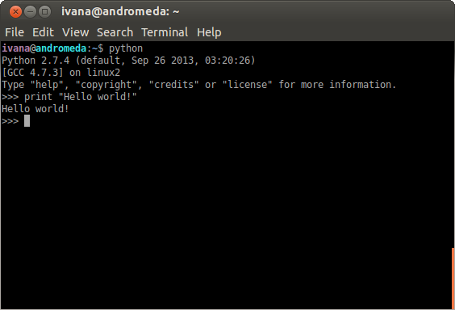
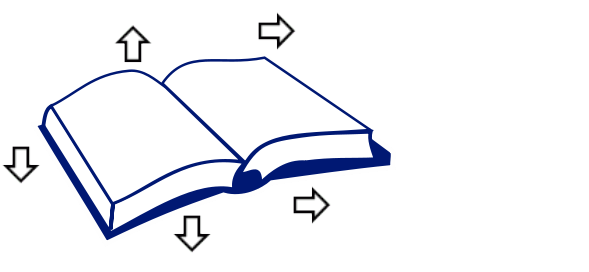

<!doctype html>
<html lang="en">

<head>
	<meta charset="utf-8">

	<title>OOP in Python</title>

	<meta name="description" content="Slides for the talk on Python in science for PyLadies Berlin">
	<meta name="author" content="Ivana Kajic">

	<meta name="apple-mobile-web-app-capable" content="yes" />
	<meta name="apple-mobile-web-app-status-bar-style" content="black-translucent" />

	<meta name="viewport" content="width=device-width, initial-scale=1.0, maximum-scale=1.0, user-scalable=no">

	<link rel="stylesheet" href="css/reveal.css" type="text/css" media="screen" />
	<link rel="stylesheet" href="css/night.css" id="theme" />

	<!-- For syntax highlighting -->
	<link rel="stylesheet" href="lib/css/zenburn.css">

	<!-- If the query includes 'print-pdf', use the PDF print sheet -->
	<script>
		document.write( '<link rel="stylesheet" href="css/print/' + ( window.location.search.match( /print-pdf/gi ) ? 'pdf' : 'paper' ) + '.css" type="text/css" media="print">' );
	</script>

	<!--[if lt IE 9]>
	<script src="lib/js/html5shiv.js"></script>
	<![endif]-->
</head>

<body>

	<div class="reveal">

		<div class="slides">

<section data-markdown data-separator="^\n---\n$">
<script type="text/template">

### An introduction to Object-Oriented Programming with Python


<small> PyLadies Berlin, April 2014 </small>

<small> [Ivana Kajic](mailto:ivana.kajic@gmail.com) | Student @ TU Berlin | [@kajic_ivana](http://twitter.com/kajic_ivana) </small>

---

## What are we going to do today?

* Remind us of some Python basics: variables and functions 

* Give a motivation and an intuitive definition of object-orientation 

* Familiarize ourselves with the OOP terminology and see several examples of OOP concepts in Python 

* Get some work done in the hands-on session 

---

## Some information before we start

* The slides are available [online](http://ikajic.github.io/python-oop/) : ikajic.github.io/python-oop/

* They contain links to tutorials, explanations and other useful material I'll mention throughout the talk

* Code examples I'll be showing are copy-pasted from the Python interpreter

---

## Python Interpreter

* A program that executes commands written in Python



---

## Reminder: variables

* Variables are containers that store different types of data

* Their values can be modified (thus the name), manipulated, displayed on the screen...

* Let's inspect some of the simple data types in Python

    ```python
    >>> x = 8
    >>> type(x)
    <type 'int'>
    >>> x + 221
    229
    >>> s = "Snake!"
    >>> type(s)
    <type 'str'>
    >>> ages = [18, 43, 21, 66]
    >>> type(ages)
    <type 'list'>
    >>> id = {'name': 'Heidi', 'age': 5, 'hair-color': 'brown'}
    >>> type(id)
    <type 'dict'>
    ```

---

## More variables

* The data types we have seen in the previous example are called [built-in Types](https://docs.python.org/2/library/stdtypes.html) and there are many of them

* Some of the Built-in Types are: 
	* `int` - integers (e.g. 2, -10)
	* `float` - floating point numbers (-1.2, 1.)
	* `bool` - boolean values (eiter `True` or `False`)
	* `str` -  strings, a sequence of characters (e.g. "Monday", "123")
	* `list` - list as a collection of values (e.g. [1, 2, 3], ["Hey", "there", 22])
	* `dict` - dictionary, mapping between labels and values

---

## Reminder: functions
 
* Functions are operations on variables 

* For example: addition (+) is a mathematical operation that can be expressed as a function: ``f(a,b) = a + b``
	* `f` is the name of the function
	* `a` and `b` are the arguments this function is using

* In Python, we can define the function `f` and use it:
    ```python
    >>> def f(a, b):
    ...     # variable res stores the result of addition
    ...     res = a+b
    ...     return res
    ... 
    >>> a = 3
    >>> b = 4
    >>> f(a, b)
    7
    ```

---

## Organizing functions

* Imagine having a `functions.py` module that contains a bunch of different functions called in another `.py` script (here we listed only function definitions):

    ```python
    ...
    def add_floats(a, b):
    def print_float(a):
    def clear_float(a):
    def add_ints(a, b):
    def print_int(a):
    def clear_int(a):
    def add_strings(a, b):
    def print_string(a):
    def clear_string(a):
    ...
    ```

---

## Imports 

* If you wanted use these functions in some other script, you would [import](http://scipy-lectures.github.io/intro/language/reusing_code.html) them as a module using the following command:

    ```python
    import functions 

    x = 3.4
    y = 4.3
    functions.add_floats(x, y)
    ```

* Or alternatively, import only needed functions:

```python
from functions import add_floats, print_float
```

---

## Analyzing `functions.py`

* Some pieces of code are redundant  
	 * `add_floats` and `add_ints` might contain the same code for addition
	 * `print_string` and `print_int` could also be similar
	 
* For a new data type we might feel tempted to copy-paste existing functions and just replace names (bad idea!)

* We must know and explicitly list all function names we want to import 
```python
from functions import add_floats, print_float, clear_float, add_ints, print_int, clear_int
```

---

## Is there an alternative to organizing the code?

* Yes! We could use object-oriented programming

* But in order to understand how, let's first do a little detour...

---

<div style="float:left;"> 
 <vsmall> [\*] </vsmall>
 <vsmall> [**] </vsmall>
</div>

  <vsmall> [\*] http://mythologica.ro/wp-content/uploads/2013/05/110920AncientLibraryMelkMonasteryAustria.jpg </vsmall>
<br>
<vsmall> [**] http://organiseme.files.wordpress.com/2011/06/pile_of_books.jpg </vsmall>


---

## Describing a book

* More or less, every book can be described using following attributes:
<center>  </center>

---

## Things you can do with a library book

* Borrow: **who** borrowed the book, **when** and for how **long**

* Return: **who** returned the book, **when**, what was the **state** of the book upon giving it back

* Repair: **what** is a damage, **where** is it located and **how** much does it cost?

* You can also read a book, destroy it (spill coffee on it), etc... but those are not so relevant now :)

---

## Important things to know about the book example

* When describing what a book is with different attributes, we didn't describe a particular instance of book but the "idea" of a book

* However, all books we know need to have these attributes

* We mentioned things which can be done with this book

---

## First class

```python
>>> class Book: # <-- definition of a class
...     """This class describes the concept of a book.""" # <-- docstring
...     
...     evil = 0 # <-- class varible
...     
...     def __init__(self, title, author, isbn): # <-- this is a method
...         self.title = title # <-- this is an atribute
...         self.author = author # <-- so is this
...         self.isbn = isbn
...         self.state = "Available"
...     
...     def borrow(self, name, date): # <-- another method
...         self.name = name
...         self.state = "Borrowed"
...         self.date = date.getCurrentDate()  # <-- a function defined in a module date
...
...     def repair(self, page, cost):
...         self.cost = cost
...         self.what = page
```

---

## Classes and objects

* Class is a description or a representation of an object, defined using the keyword `class`:
        class Book:

* By convention, the first letter of a class name is an uppercase

* Object is an instance of a class:
    ```python
    >>> favorite_book = Book("Pride and Prejudice", "Jane Austen", "123")
    >>> type(fav)
    <type 'instance'>
    >>> boring_book = Book("Washing machines of the 20th century", "Boring Guy", "456")
    ```
    * `favorite_book` and `boring_book` are objects

* Every object has its own copies of class methods and attributes

---

## Class methods, constructor

* All functions defined inside a class are called methods and must have the keyword `self` in the list of arguments
        >>> def borrow(self, name, date):
        
* Methods define what we can do with a class
    
* `__init__` is a special method called **constructor** 
    * Every time an object is instantiated, Python calls the constructor of the class
    * It is useful to set the default values of class attributes
    
* Methods are accessed using the dot notation
```python
    >>> # Inside a class
    >>> self.borrow() 
    >>> # From an object
    >>> favorite_book.borrow()
```

---

## Class attributes
      
* Class attributes are variables inside a class and are also accessed using the dot notation
```python
    >>> # Inside a class
    >>> self.name
    >>> self.state    
    >>> # From an object
    >>> obj.name
    >>> obj.state
```    
        
* We can add new attributes at any time:
        >>> favorite_book.times_read = 0
        >>> favorite_book.times_read = favorite_book.times_read+1
        
* And delete them:
        >>> del favorite_book.times_read

---

## Class variables
                
* Class variables are defined within a class, but outside of a method 
    ```python
        >>> class Book: # <-- definition of a class
        ...     """This class describes the concept of a book.""" # <-- docstring
        ...     
        ...     evil = 0 # <-- class varible
        ...     def __init__(self, title, author, isbn): # <-- this is a method
    ```
    
* They can be very dangerous if not used properly 
    * To see what that means, we will use them improperly in the hands on session      

---

## Remarks

* Objects can also be deleted to free up memory
	* Python does this automatically in a process called [Garbage collection](http://www.digi.com/wiki/developer/index.php/Python_Garbage_Collection) when it detects an object is not used anymore
	* If you want to remove the object by hand:
            del favorite_book

* If you want to inspect elements of a class or an object, you can access its dictionary using the `__dict__` command:
    ```python
    >>> Book.__dict__
    {'index': 0, '__module__': '__main__', 
    '__doc__': 'This class describes the concept of a book.', 
    '__init__': <function __init__ at 0x89b5dbc>, 
    'borrow': <function borrow at 0x89b5d84>}
    >>> fav.__dict__
    {'author': 'Jane Austen', 'isbn': '123', 'title': 'Pride and Prejudice'}
    ```

---

## Advanced OOP: Inheritance

* [Inheritance](https://docs.python.org/2/tutorial/classes.html#inheritance) is used to derive from an existing class which is called a parent or base class:

    ```python
    >>> class Fruit: # define parent class
    ...     def __init__(self):
    ...         print "Hi there! I'm a fruit and I'm growing"            
    ...     def eat(self):
    ...         print "I love eating fruit!"
    ... 
    >>> class Pineapple(Fruit): # define one child class
    ...     def __init__(self):       
    ...         print "I am a yummi pineapple!"  
    ...
    >>> p = Pineapple()
    I am a yummi pineapple!
    >>> p.eat()
    I love eating fruit!
    ```

---

### Advanced OOP: Inheritance [cont'd]
    
* We can also [override](http://en.wikipedia.org/wiki/Method_overriding) methods defined in a parent class
    ```python
    >>> class Fruit:        # define parent class
    ...     def __init__(self):
    ...         print "Hi there! I'm a fruit and I'm growing"            
    ...     def eat(self):
    ...         print "I love eating fruit!"
    ...     
    >>> class Banana(Fruit): # define another child class
    ...     def eat(self):
    ...         print "I like only bananas!"
    ...
    >>> b = Banana()
    print "Hi there! I'm a fruit and I'm growing"
    >>> b.eat()
    I like only bananas!    
    ```
* Use the [`super`](http://learnpythonthehardway.org/book/ex44.html) keyword in the constructor to invoke the constructor of the parent class
    ```python
    super(Banana, self).__init__()   
    ```

---

### Advanced OOP: Encapsulation

* [Encapsulation](http://stackoverflow.com/questions/70528/why-are-pythons-private-methods-not-actually-private) or "data hiding" is used to hide some class members and make them invisible in objects

* In Python, this is achieved* using underscores "`__`"
    ```python
    >>> class JustCounter:
    ...    __secretCount = 0
    ...   
    ...    def count(self):
    ...       self.__secretCount += 1
    ...       print self.__secretCount
    ... 
    >>> counter = JustCounter()
    >>> counter.count()
    1
    >>> counter.count()
    2
    ```

* When we try to access the `__secretCount` variable:
    ```python
    >>> print counter.__secretCount
    Traceback (most recent call last):
      File "<stdin>", line 1, in <module>
    AttributeError: JustCounter instance has no attribute '__secretCount'
    ```

<small> * Actually, it is possible to access hidden members, we'll do it later! </smaller>

---

## Back to our data types

* Create **class** as a blueprint and **objects** that are concrete examples of that class (dots are hiding more complex code which is omitted for brevity)

```python
class DataType():
    ...

class Integer(DataType):
    ...
    
class String(DataType):    
    ...
    
>>> n = Integer(3) # <-- object
>>> s = String("Popocatepetl") # <-- another object
>>> n.print()
Printing an integer: 3
>>> s.print()
Printing a string: "Popocatepetl"
>>> s.clear()
>>> s.print()
Printing a string: ""
```

---

## Wait... What just happened?

* We created classes for each data type and every class inherited functionality from the `DataType` class

* Although we had different objects (some were ints, some strings) we still used them in the same way

    ```python
    >>> n.print() # n is an Integer
    >>> s.print() # s is a String
    ```

* We added additional behaviour to the print command
    ```python
    >>> n.print()
    Printing an integer: 3
    ```

---

## In the end... Why OOP?

* Having many functions and variables can get very messy!	

* Object-oriented approach is a way to organize and structure your code 

* Group pieces of code that logically fit together

* Understanding how OOP works helps understanding Python internals, as well as some of libraries you might have used (Django, Flask, SciPy...)

---

## Hands-on session

* There are two tutorials, pick the one you like!

* [non-OOP basic Python](http://learnpythonthehardway.org/book/): Variables, functions, files for beginners
    * Recommended for programming/Python first timers
    * The tutorial guides you through the installation process (Exercise 0) and continues with simple exercises (Exercise 1 - Exercise 4)
    
* [OOP](https://github.com/ikajic/python-oop/): First steps in OOPv
    * Recommended for all who already know some Python
    * There are several exercises of varying complexity, it starts with the simplest ones: creation of a class, inspection of class members and playing around with instances of that class
    * Last few exercises are a bit more advanced (but fun!)


</script>            
</section>                                       

   		</div>

	</div>

	<script src="lib/js/head.min.js"></script>
	<script src="js/reveal.min.js"></script>

	<script>

		// Full list of configuration options available here:
		// https://github.com/hakimel/reveal.js#configuration
		Reveal.initialize({
			controls: true,
			progress: true,
			history: true,
			center: true,
			margin: 0.0,

			theme: Reveal.getQueryHash().theme, // available themes are in /css/theme
			transition: Reveal.getQueryHash().transition || 'default', // default/cube/page/concave/zoom/linear/fade/none

			// Optional libraries used to extend on reveal.js
			dependencies: [
				{ src: 'lib/js/classList.js', condition: function() { return !document.body.classList; } },
				{ src: 'plugin/markdown/marked.js', condition: function() { return !!document.querySelector( '[data-markdown]' ); } },
				{ src: 'plugin/markdown/markdown.js', condition: function() { return !!document.querySelector( '[data-markdown]' ); } },
				{ src: 'plugin/highlight/highlight.js', async: true, callback: function() { hljs.initHighlightingOnLoad(); } },
				//{ src: 'plugin/zoom-js/zoom.js', async: true, condition: function() { return !!document.body.classList; } },
				{ src: 'plugin/notes/notes.js', async: true, condition: function() { return !!document.body.classList; } }
			]
		});

	</script>

</body>
</html>
